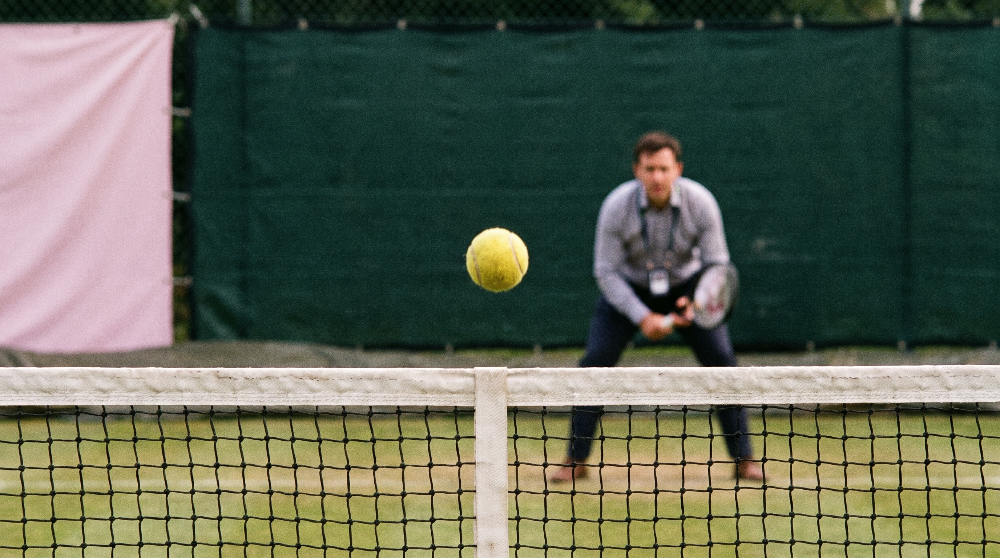
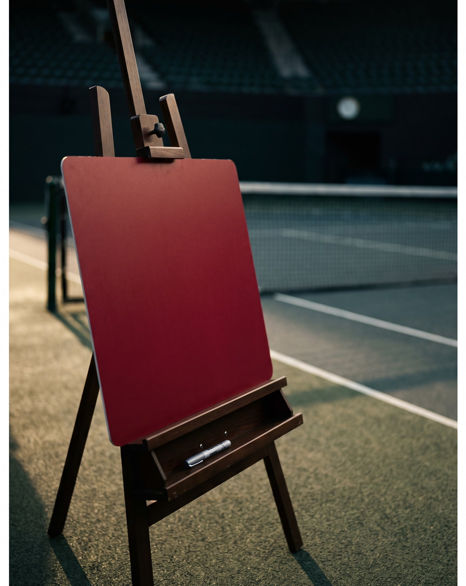
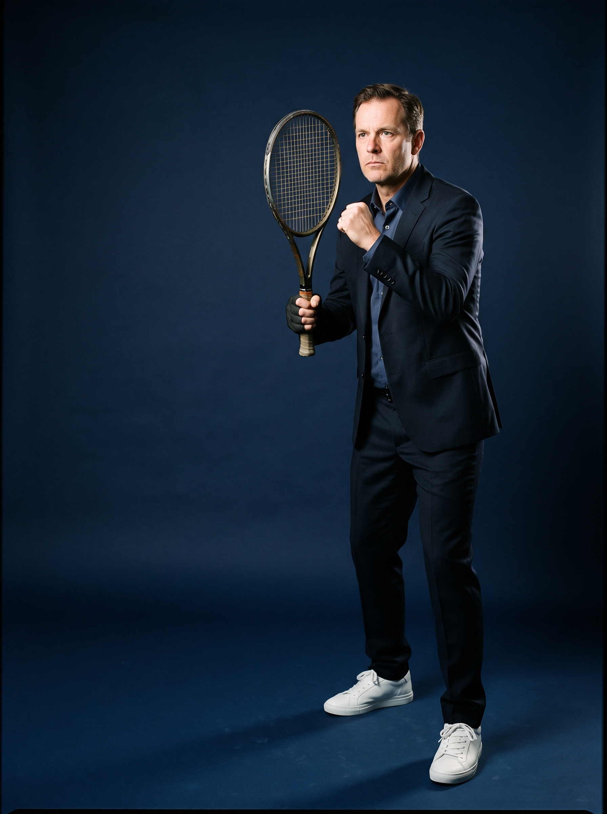
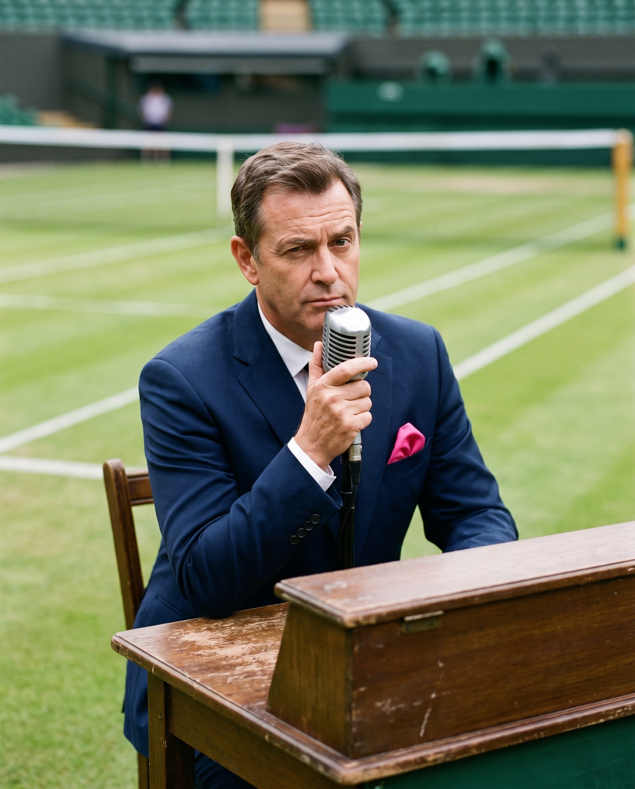
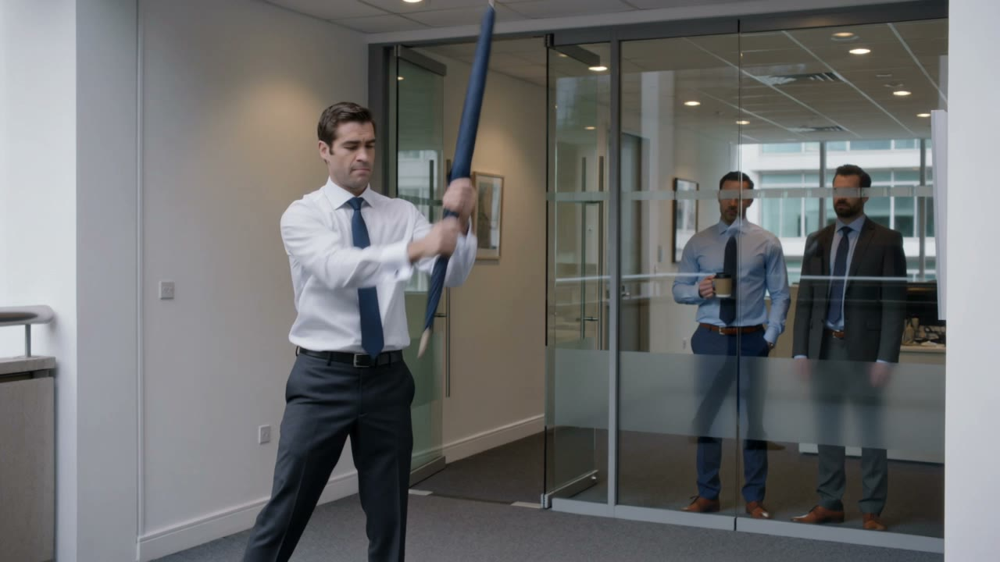
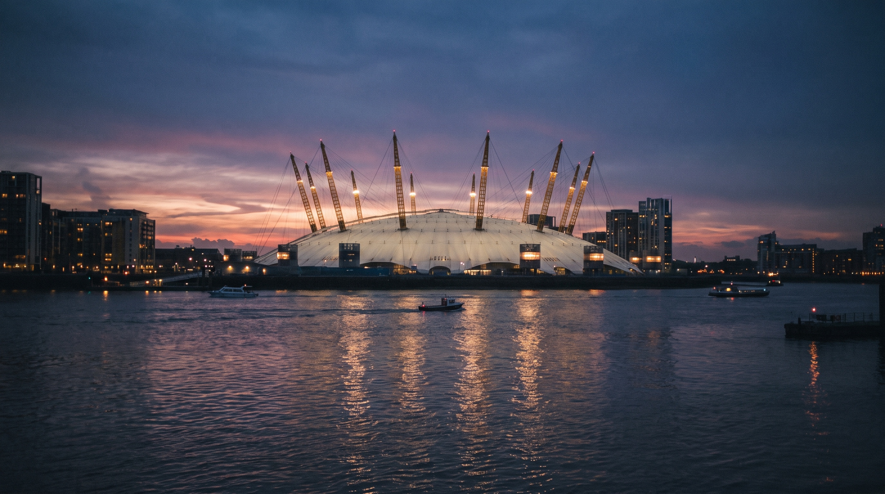

The week of the Laver Cup (25–27 Sept 2026). London.
Our sponsorship rights contain about a dozen genuine T1-client moments all year, and most are shared with the group. So we make our own: we hire one British tennis name, and we build client moments around them that we fully control and fully own.
Light by design. Three sizes. The World Card in every shot.
Part 1 · The moments we create · WorldFirst UK01
02 · THE PROBLEM
02
Why we need our own moments
Our Laver Cup deal has almost no people in it.
Our rights: a logo, a shared booth, a handful of hospitality seats. No player images on our channels. No Alcaraz activity anywhere in the UK outside the tournament. Client relationships are built on faces, rooms and follow-ups — and the package gives us very few of any.
That's not a complaint. It's a brief. Part 2 counts exactly what we hold; this part builds what it doesn't.
Part 1 · The moments we create · WorldFirst UK02
03 · THE T1 LEDGER
03
The whole point, on one page
A dozen T1 moments we hold. Fifty we can create.
T1 asset
How many for WF
Who it's for
Follow-up owner
Federer breakfast seat
TBC · last year ~6
C-level clients only
KA / UK
Rocky Club VIP (tour + photos + practice)
TBC · sponsorship team confirming
Top rights-ticket clients
KA / UK
Player-photo draw (blind)
Subset of the above — never promised
Same rights-ticket holders
KA / UK
Opening gala seat
1–2 (TBC)
Senior WF — sponsor-family room
Leadership
Fan-zone booth visit
Open, low-intent (to-C fun)
Anyone passing
Social
Build A — booth "beat the legend"
Dozens of filmed interactions
KOLs + drop-in clients
Social / KA
Build B — private client morning
~20 controlled T1 sessions
Named T1 clients & partners
KA / UK
Read the top five rows and the arithmetic is brutal: perhaps a dozen real T1 experiences all year, most shared with group executives and none of them ours to control. The bottom two rows are this proposal — roughly fifty controlled touchpoints, each with a personal video, a follow-up excuse and a named owner. This is a client-capture plan, not a brand stunt.
Part 1 · The moments we create · WorldFirst UK03
04 · THE FIX
04
The answer in two moves
Can't borrow a star? Hire one.
Move 1
Our own face
We pay one well-known British player directly. Their face, name and footage become ours — cleared through the agency, ours to use on our own channels. No committees, no blind draws, no likeness restriction, because they're ours.
Move 2
Two light containers
Not one big event. One hired day, deployed two ways: a public turn inside our own fan-zone booth during the week, and a private client morning alongside it. Each lands in a budget line that already exists.
One rule holds across everything: we never say "Laver Cup" in our creative, and we never imply a tie we don't have. Our star is our star; our booth turn is part of the family's own activation. Clean, and nothing to defend.
Part 1 · The moments we create · WorldFirst UK04
05 · THE THREE BUILDS
05
Same idea, three weights — pick by budget and appetite
Light, lighter, lightest.
Build A ✦ recommended
The booth turn
The hired legend does two public hours inside our fan-zone booth: "beat the legend, one point." Zero venue cost, one shooter.
~£10–20k
Build B ✦ recommended
The client morning
A private morning for ~20 T1 clients & partners: one court, one game, personal clips, one signed prize. Hospitality, not a campaign.
~£20–35k
Build C · fallback
Content only
Half-day studio shoot with the star and the World Card: five clips, a year of use. Cheapest, but it wins no client moments.
~£12–18k
The recommendation
A + B on one day-rate ≈ £30–40k all-in. One fee covers both: two public booth hours (the brand moment, inside the family's activation) and one private client morning (the T1-capture engine). The heavy 70-guest standalone event is on the last page — for next year, if we want to go big.
Part 1 · The moments we create · WorldFirst UK05
06 · BUILD A
A
Build A · the brand moment, inside what we already own
Put the star in our booth.
How it works
Our fan-zone booth already has a Serve Challenge court and a screen. We add a name: two hours of "beat the legend, one point."
Our own hired retiree, so no player-likeness rule applies — we film all of it.
The KOLs the official side invites anyway will queue to play it.
Why it's the easy yes
It needs a booth-calendar slot from the sponsorship team, not a new budget or a new venue. It makes the shared booth the busiest box in the zone — a coordination story the family reads as a gift, not a land-grab.
Our booth · the WF turn
Part 1 · The moments we create · WorldFirst UK06
07 · BUILD B
B
Build B · the T1-capture engine
A private morning. Twenty of the right people.
The shape
Twenty T1 clients and partners — not seventy. One hired prestige-club court for a morning.
One game: One Point Slam. One videographer, personal clip to each guest by QR within minutes.
One prize: a signed giant World Card. No draw, no tickets, no derby.
Why it clears approval
Run as client hospitality with a special guest, it uses the hospitality and field-events path that already exists. "Client morning" doesn't trigger brand review the way "campaign" does — same T1 value, a third of the cost, a tenth of the politics.
One court · one morning
Part 1 · The moments we create · WorldFirst UK07
08 · THE FORMAT
08
Two games do all the work
One point to win. One serve to survive.
One Point Slam · the core
You — or you and a teammate — against the pro. One point. That's the whole game. ~90 seconds each, so everyone gets a moment, and every point is a ready-made 20-second film with a beginning, a middle and a dignified end.
Return the Rocket · the booth spectacle
Best with a big-serve legend: the pro serves at full speed, you stand there bravely. Touch it, the crowd roars. The most shareable 15 seconds of the day, and the reason a serve legend headlines Build A.

No "Derby". The Antom-vs-WorldFirst squad idea is parked until Antom and ANI comms have signed off in writing — we don't stage a sister brand in our creative on a heads-up.
Part 1 · The moments we create · WorldFirst UK08
09 · THE PROP & THE PRIZE
09
The hero prop is the product
One card, held up all campaign long.
The prop
Every key image puts the physical WorldFirst World Card in the star's hand — held up like a trophy, signed like an autograph card, laid on the net like a challenge. One product, one image system, everywhere.
The prize — signed live
One hero gift: the Big Card, a giant World Card replica, signed and framed. Plus signed red rackets and ball tubes for guests. All WorldFirst-branded, all signed by our own star. No Laver Cup tickets are used as prizes, and nothing Laver-branded is produced.

Part 1 · The moments we create · WorldFirst UK09
10 · THE PEOPLE
10
Four roles — all of them ours to film
The cast.
The Star
The hired player. Charming on camera, ruthless on court. Face and name ours — World Card in hand in every hero shot.
The Friends
Invited T1 clients and partners. They play, they're filmed, their companies join the story — and a named owner follows up.

The Challengers
Our London employees at the booth turn. Intro cards, unearned confidence, honest defeat.

The Commentator
A post-production voice, dry market-report delivery: "The CFO opened strong. The position collapsed." Added in the edit — no crew cost.
Part 1 · The moments we create · WorldFirst UK10
11 · THE STAR, PRICED
11
Fee estimates only — real numbers come from agency quotes
Who we hire, and what it costs.
Option
Profile (examples of the tier)
Est. fee for one day*
Notes
British legend ✦
Tim Henman — retired, universally known in the UK, great with a crowd · WIKI ↗
£15–30k
Recommended. Best recognition per pound. No schedule conflicts.
Big-serve legend ✦
Greg Rusedski — once the fastest serve in the world · WIKI ↗
£10–20k
Also recommended. Makes the booth turn the headline.
National-news level. Only if leadership wants a flagship moment.
*One appearance day + usage on our own social and web channels (UK). Usage term per agency negotiation — target 12 months. Add 10–20% agency fee; paid-ad usage costs more. Diligence before signing: no payments/banking sponsor conflict, clean profile, free on the date. Named players are tier examples, not confirmed targets. Photos & links: Wikipedia.
Part 1 · The moments we create · WorldFirst UK11
12 · THE CONTENT
12
Shoot one day, publish for weeks
A year of assets from one hire.
On the day
Every point filmed; personal QR clips within minutes
One 60–90s main film + 15s cuts
The hero shot: star + World Card — our key image for the year
The weeks after
Main film and clips roll out across our own channels
Commentator recaps; guests reshare their own moments
Footage feeds the booth screens, web, sales decks and OOH
The year after
Cleared footage reused on web and in decks all year
The star + World Card image anchors the brand line
No re-shoot, no re-clearance — one hire, twelve months


Part 1 · The moments we create · WorldFirst UK12
13 · COSTS
13
All-in bands — quotes will sharpen them
What each build actually costs.
Cost line
A · booth turn
A + B ✦ recommended
Next year · big event
Player (day + 12-month use)
£10–20k
£15–30k
£25–45k (two stars)
Venue + dressing
£0 (our booth)
£3–6k (one club court)
£8–15k
Production (crew, edit, QR clips)
£6–10k
£10–16k
£40–60k
Prize + gifts
£1–3k
£3–5k
£10k
Hospitality (~20 clients)
—
£3–6k
£15k+
Total
~£10–20k
~£30–40k
~£100k+
For scale: two weeks on one mid-size London billboard can cost more than the whole recommended A+B — and this produces footage we own for a year, plus twenty T1 relationships in a morning. In a year the budget line reads "no branding spend", this is the version that fits.
Part 1 · The moments we create · WorldFirst UK13
14 · HOW WE MEASURE IT
14
Reported on business return, not attendance
Three goals. Revenue first.
Goal 1 · New revenue
The headline
90-day
new-revenue attribution window
Every T1 guest → named owner → follow-up → pipeline entry
New-customer revenue, co-owned with commercial/KA — the number; NFM secondary
Goal 2 · Engagement
The right people, closer
~20
T1 clients & partners hosted (Build B)
Every seat mapped to an account plan
Follow-up meeting inside 72 hours for every hosted client
Goal 3 · Awareness
More of the UK knows us
1 yr
of owned footage from one hire
Main film + clip reach; booth-turn share of voice in the zone
Simple before/after branded-search read across the window
Alignment
Mirrors the new target model: new-customer revenue is the headline (co-owned with commercial/KA), NFM secondary, and every hospitality seat is reported on business return, not attendance. Draft targets agreed with commercial before invites go out.
Part 1 · The moments we create · WorldFirst UK14
15 · WHO SIGNS OFF WHAT
15
Nothing here moves without the right yes
Five sign-offs. Named.
Booth turn (Build A): a calendar slot from the sponsorship team (Daniel / the vendor team) — no new budget.
Client morning (Build B): the UK team owns the guest list and the budget line; runs on the hospitality / field-events path.
Talent: agency-cleared usage, and a check for any payments/banking sponsor conflict before we sign.
Any sister-brand use (e.g. an Antom squad): written consent from Antom and ANI comms first — never on a heads-up.
OOH / any Alcaraz or lockup frame: supplied only through the sponsorship team's agent clearance (see Part 2) — we do not source player images independently.
The whole plan goes past the sponsorship team before any agency brief goes out. Everything above is designed to make that a short conversation.
Part 1 · The moments we create · WorldFirst UK15
16 · NEXT STEPS
16
Move fast — legends get booked early
Decide this week. Send this today.
Decisions needed this week
Approve the build: A, A+B (recommended), or C
Confirm the ~£30–40k band for A+B
Name the owner of the T1 client list
Get the booth-slot conversation started with the sponsorship team
The agency brief — ready to send
"UK fintech seeks a well-known British tennis name, retired, for one London appearance day in the week of 22 September: a two-hour public 'beat the legend' turn at our event booth and a private client morning, playing short one-point games against guests, signing WorldFirst-branded gifts, light filming, ~12 months' use on our own channels. No conflicts with payments/banking sponsors. Budget £15–35k depending on profile. Options, fees and availability by 25 July, please."